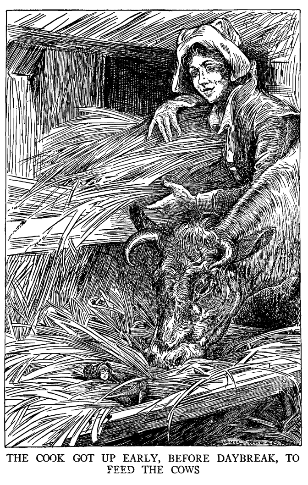

Houve, uma vez, um camponês que, estando durante a noite sentado junto da lareira atiçando o fogo, disse à mulher que fiava aí ao lado:
- Como é triste não ter filhos! Nossa casa é tão silenciosa, ao passo que nas outras há tanto barulho e alegria!
- E' verdade, - respondeu a mulher, suspirando, - mesmo que tivéssemos um único filho, nem que fosse do tamanho deste polegar, eu já me sentiria feliz, e o amaríamos de todo o coração.
Ora, aconteceu que a mulher começou a sentir-se indisposta e, passados sete meses, deu à luz um menino, perfeitamente formado, mas do tamanhinho de um polegar. Então, denominaram-no: Pequeno Polegar. Os pais alimentavam-no o melhor possível, mas o menino não cresceu; ficou do mesmo tamanhinho que tinha ao nascer. Contudo, ele tinha um olhar muito inteligente e, bem cedo, revelou-se criança vivaz e esperta, sabendo sair-se bem em todos os empreendimentos.
Um dia, o camponês estava se aprontando para ir à floresta rachar lenha; então, disse de si para si:
- Como gostaria que alguém me fosse buscar com o carro para trazer a lenha!
- Ah, papai, - exclamou o Pequeno Polegar, - eu irei! Fica sossegado, levarei o carro e chegarei lá na hora certa.
O homem pôs-se a rir e disse:
- Como é isso possível? Tu és muito pequeno para segurar as rédeas e guiar um cavalo!
- Não faz mal, papai. Se a mamãe o atrelar, eu me sento na orelha do cavalo e lhe digo como e aonde deve ir.
- Está bem! - respondeu o camponês; - por uma vez, podemos experimentar.
Quando estava na hora, a mãe atrelou o cavalo, sentou Polegar numa de suas orelhas e o petiz ia-lhe gritando como e aonde devia ir: "Ei, aí! Arre, irra!" O cavalo andava direito como se fosse guiado por um cocheiro e o carro seguia o caminho certo para a floresta. Eis que, justamente numa curva, quando o pequeno gritava ao cavalo para virar à esquerda, passaram por aí dois forasteiros.
- Grande Deus! - disse um deles - que é isso? Aí vai um carro e o cocheiro que grita para o cavalo ó invisível!
- Isso não é normal, - disse o outro, - vamos seguir o carro e ver aonde vai parar.
O carro entrou direito na floresta e foi aonde estava a lenha rachada. Quando Polegar viu o pai, gritou-lhe:
- Eis-me aqui, papai! Trouxe o carro, viste? Agora vem descer-me.
O pai segurou o cavalo com a mão esquerda e, com a direita, tirou o filhinho de sua orelha; todo satisfeito, o menino foi sentar-se num galhinho.
Quando os dois forasteiros viram o Pequeno Polegar, ficaram tão admirados que não sabiam o que dizer. Então, um deles chamou o outro de lado e disse:
- Escuta, aquele pimpolho poderia fazer a nossa fortuna se o exibíssemos a pagamento numa grande cidade. Vamos comprá-lo!
Aproximaram-se do camponês e disseram-lhe:
- Vende-nos esse anãozinho, nós o trataremos bem e ele se sentirá feliz conosco.
- Não! - respondeu o pai. - Ele é a raiz do meu coração, jamais o venderia, nem por todo o ouro do mundo.
Mas o Pequeno Polegar, ouvindo esse negócio, trepou pelas dobras da roupa do pai, sentou-se no seu ombro e sussurrou-lhe ao ouvido:
- Papai, podes vender-me; eu saberei voltar outra
vez.
Assim, depois de muito discutir, o pai deu-o aos homens em troca de muitas moedas de ouro.
- Onde queres que te ponha? - perguntou um dos homens.
- Senta-me na aba do teu chapéu, aí eu poderei passear à vontade e admirar toda a região sem perigo de cair.
Fizeram-lhe a vontade. Polegar despediu-se do pai, e, em seguida, foram andando. Andaram até ao escurecer; aí o pequeno disse:
- Põe-me no chão um pouquinho; estou precisando.
- Podes ficar aí mesmo, - disse o homem, - não tem importância. Também os passarinhos de vez em quando deixam cair alguma coisa na cabeça da gente!
- Não, - insistiu o pequeno Polegar, - conheço bem as conveniências; desce-me depressa!
O homem tirou o chapéu e pôs o pequeno num campo à margem da estrada. O pequeno, então, meteu-se por entre os torrões de terra, saltitando de cá para lá e, de repente, resvalou para dentro de um buraco de rato, o que justamente estava procurando.
- Boa noite, senhores! podeis continuar vosso caminho sem mim! - gritou-lhes galhofeiro o petiz.
Os dois homens correram e sondaram o buraco com um pau, mas foi trabalho perdido. Polegar ia resvalando sempre mais para o fundo e, como logo desceu a noite, escura como breu, os homens tiveram de partir, cheios de raiva e com a bolsa vazia. Quando Polegar se certificou de que os homens tinham ido embora, saiu da galeria subterrânea. "É perigoso andar pelos campos no escuro!- disse. - A gente pode quebrar o pescoço ou uma perna!" Por sorte sua, encontrou um caramujo. "Graças a Deus! - disse ele; - aqui poderei passar a noite em segurança!" E meteu-se dentro dele. Pouco depois, já ia adormecendo, quando ouviu passar dois homens, um dos quais dizia:
- Como faremos para tirar o ouro e a prata do rico Vigário?
- Eu te poderei ensinar, - gritou o pequeno Polegar.
- Que é isso? - disse assustado um dos ladrões. - Ouvi alguém falar!
Pararam e puseram-se a escutar; então Polegar repetiu:
- Levai-me convosco, eu vos ajudarei.
- Mas, onde estás?
- Procurai no chão e prestai atenção de onde sai a minha voz.
Finalmente, depois de muito procurar, os ladrões encontram-no e o apanharam.
- Tu, tiquinho de gente, como podes nos ajudar! - disseram eles.
- Escutai, - disse o pequeno, - eu entrarei pela grade da janela no quarto do Senhor Vigário e vos entregarei o que quiserdes.
- Está bem! - disseram os ladrões; - vamos ver para que serves.
Quando chegaram à casa paroquial, Polegar insinuou-se pelas grades e entrou no quarto; uma vez dentro, pôs-se a gritar com todas as forças de seus pulmões:
- Quereis tudo o que há aqui?
Os ladrões alarmaram-se e disseram:
- Fala baixo, não acordes ninguém!
Mas Polegar fingiu não ter compreendido e gritou outra vez:
- Que quereis? Quereis tudo o que há aqui?
A cozinheira, que dormia no quarto ao lado, ouviu, sentou-se na cama e ficou escutando. Assustadíssimos, os ladrões fugiram; tendo corrido até bastante longe criaram coragem e pensaram: "Aquele tiquinho nos está arreliando!" Então voltaram e sussurraram-lhe através da grade:
- Deixa de brincadeira e passa-nos qualquer coisa.
Polegar então gritou mais alto ainda:
- Dar-vos-ei tudo, mas estendei as mãos aqui para dentro.
A empregada, que estava a escutar, ouviu-o distintamente; então pulou da cama e, tropeçando, foi até ao quarto. Os ladrões fugiram precipitadamente, correndo como se tivessem o diabo aos calcanhares. A mulher, não vendo nada, foi acender uma vela; quando voltou, Polegar, sem ser visto, escapuliu para o paiol de feno. Após ter vasculhado inutilmente todos os cantos, a empregada voltou novamente para a cama, julgando ter sonhado de olhos abertos. Polegar, trepando pelas hastes de feno, encontrara um excelente lugar para dormir. Tencionava descansar até dia feito e depois regressar à casa dos pais. Mas aguardavam-no outras experiências! Sim, o mundo está cheio de sofrimentos e atribulações!
De madrugada, a criada levantou-se para dar comida aos animais. Dirigiu-se em primeiro lugar ao paiol, apanhou uma grande braçada de feno, justamente aquele onde se encontrava Polegar dormindo. Este dormia tão profundamente que não percebeu nada e foi acordar somente na boca da vaca, que o pegara junto com o feno.
- Deus meu! - exclamou ele, - como fui cair dentro do pilão!
Logo, porém, deu-se conta do lugar em que estava. E quanta atenção lhe foi necessária para desviar-se dos dentes a fim de não ser triturado! Mas sempre acabou escorregando para dentro do estômago da vaca.

- Esqueceram de colocar janelas neste quartinho, - disse, - e não penetra sequer um raio de sol; além disso ninguém trás um lume!
O apartamento não lhe agradava absolutamente; mas o pior era que, pela porta, continuava a entrar sempre mais feno, e o espaço restringia-se cada vez mais. Por fim, amedrontado, gritou com toda a força de que dispunha:
- Não me tragam mais feno! Não me tragam mais feno!
A criada estava justamente mungindo a vaca; ouviu a voz falar e não viu ninguém; reconheceu a mesma voz que ouvira durante a noite e assustou-se tanto que escorregou do banquinho e entornou todo o leite. Correu para casa gritando ao patrão:
- Meu Deus, reverendo, a vaca falou!
- Quê? Enlouqueceste? - disse o vigário.
Contudo, foi pessoalmente ao estábulo ver o que se
passava. Mal havia posto o pé dentro, Polegar tornou a gritar:
- Não me tragam mais feno! Não me tragam mais feno!
O vigário, então, assustou-se também e julgou que havia entrado um espírito maligno na vaca. Mandou logo matá-la. Uma vez abatida, pegaram o estômago e atiraram-no na estrumeira. Com grande dificuldade, Polegar conseguiu abrir caminho e avançar; mas, justamente quando ia pondo a cabeça para fora, sobreveio-lhe outra desgraça. Um lobo esfaimado, que ia passando por aí, agarrou o estômago da vaca e engoliu-o todo de uma só vez. Polegar não desaminou. "Talvez o lobo me dê atenção" pensou, e gritou-lhe de dentro da barriga:
- Meu caro lobo, eu sei onde poderás encontrar um petisco delicioso.
- Onde? - perguntou o lobo.
- Numa casa assim e assim; tens que trepar pelo cano e aí encontrarás bôlo, linguiça e toucinho à vontade; - e descreveu-lhe detalhadamente a casa do pai.
O lobo não o fez repetir duas vezes; durante a noite trepou pelo cano, penetrou na despensa e lá comeu até fartar-se. Quando ficou satisfeito, quis sair, mas tinha engordado tanto que não conseguiu voltar pelo mesmo caminho. Era justamente com isso que Polegar contava; e desandou a fazer um barulhão na barriga do lobo, batendo os pés e vociferando o mais que podia.
- Queres calar-te? - disse-lhe o lobo, - acabas por acordar todo mundo!
- Como! - respondeu Polegar. - Tu te empanturraste à vontade e eu quero me divertir!
E voltou a gritar com todas as forças. Por fim o pai e a mãe acordaram, correram à despensa e espiaram por uma fresta. Vendo que era o lobo, precipitaram-se, um com o machado e o outro com a foice.
- Fica atrás de mim, - disse o marido, - se não o matar com a primeira machadada, tu corta-lhe a barriga com a foice.
Ouvindo a voz do pai, Polegar gritou:
- Querido papai, eu estou aqui, dentro da barriga do lobo!
- Deus seja louvado! - gritaram os pais muito contentes. - O nosso querido filhinho voltou.
Mandou a mulher guardar a foice para não machucar o pequeno Polegar; depois, erguendo o machado, desferiu um terrível golpe na cabeça do lobo, prostrando-o morto no chão. Em seguida, munidos de uma faca e de uma tesoura, cortaram-lhe a barriga e tiraram o pequeno para fora.
- Ah, - disse o pai, - como estivemos aflitos por tua causa!
- Sim, papai, andei muito por esse mundo; agora, graças a Deus, respiro novamente ar puro.
- Mas onde estiveste?
- Oh, estive num buraco de ratos, no estômago de uma vaca e na barriga de um lobo. Agora quero ficar para sempre com meus queridos pais!
- E nós não te venderemos mais nunca, nem por todo o ouro do mundo, - disseram os pais, abraçando e beijando ternamente o filhinho querido.
Depois deram-lhe de comer e beber e tiveram de mandar fazer novas roupas para ele, porque as que vestia se haviam estragado, completamente, durante a viagem.
* * * * * * * * * *